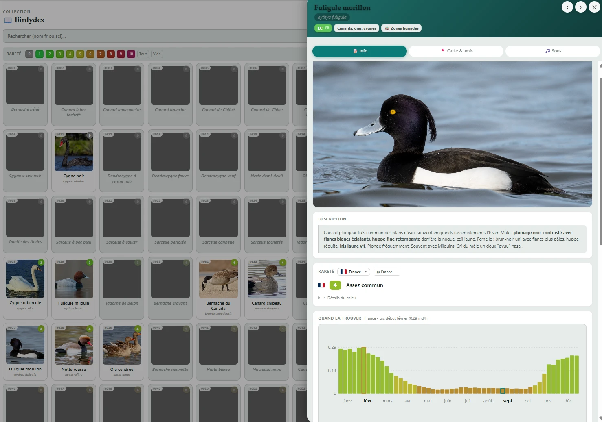
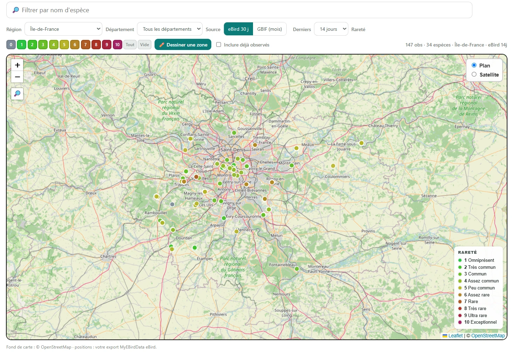
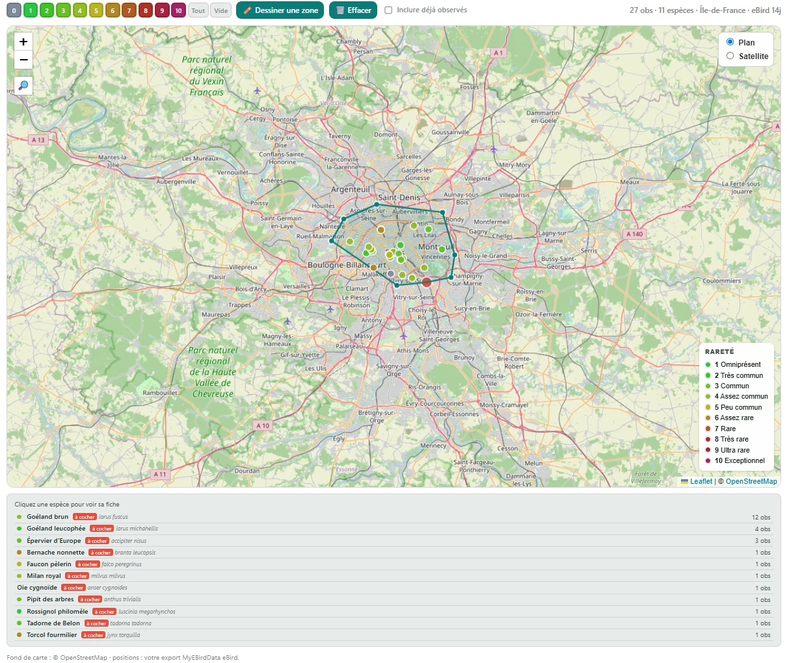
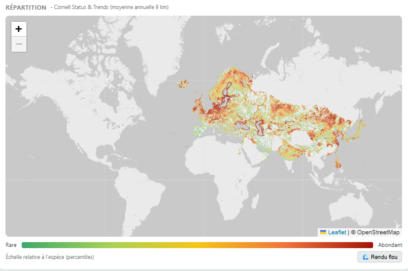
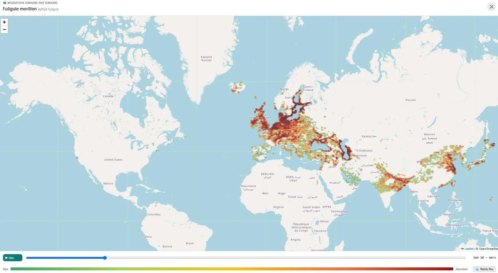

Mathis Burgevin · Réalisations SIG
Plateforme web d'observation ornithologique, projet personnel, 2025-2026

Collection Birdydex : les espèces trouvables en France, chaque fiche présentant description, rareté locale et phénologie annuelle.

Observations récentes en Île-de-France, colorées selon la rareté de l'espèce (données eBird / GBIF).

Outil de sélection à main levée pour lister les espèces observées dans une zone précise, ici Paris intra-muros, 14 derniers jours.

Carte de répartition mondiale d'une espèce, générée à partir des données Cornell Status & Trends.

Animation semaine par semaine des couloirs de migration, contrôlée par un curseur temporel.